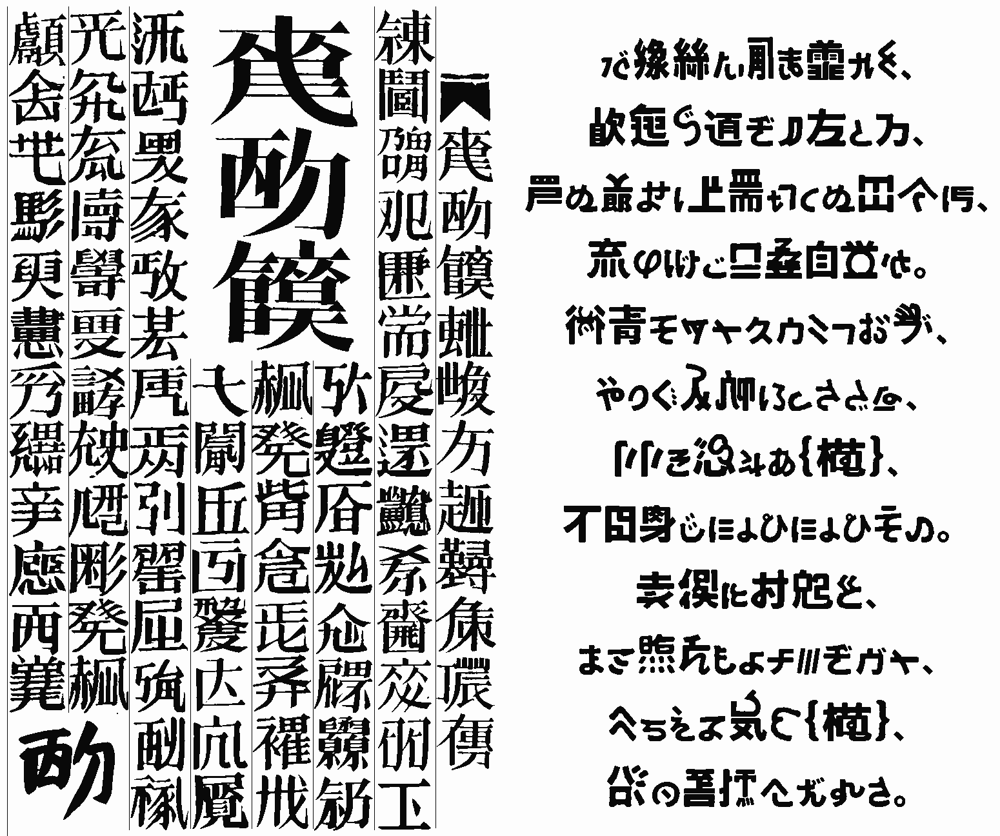
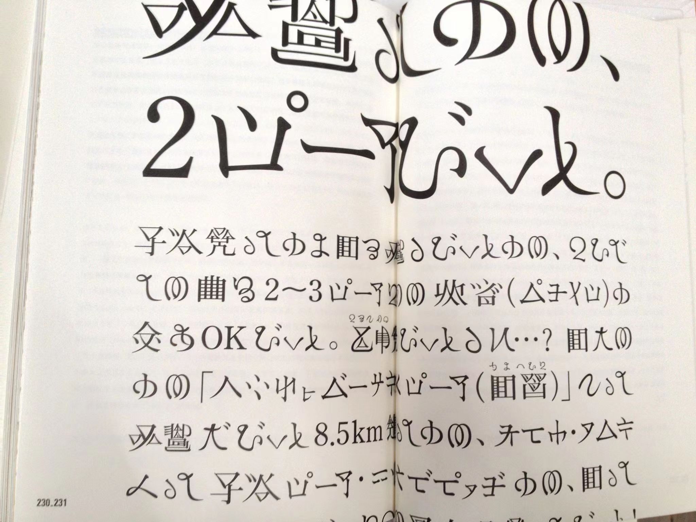

把徐冰的《析世鉴·世纪末卷》（俗称“天书”）中的“伪文字”数字化的字体。顺带还还把“全てあなたの所為です。”的《裏》的PV中的“伪文字”也一同数字化了。
……这么干应该不会被律师函吧？
预览

左：徐冰《析世鉴》；右：“全所为”系列《里》。
注解
“全所为伪文字”并不只包含《里》的伪文字，还包含以下几个模仿者的：
- BV1EK4y1s7ji《吽》
- BV1w5411r77v《欠》
- BV1rV411k7f8《疑》
版本
有两个版本：
- 一个直接位图转矢量部件的版本。
- 一个用GlyphWiki制作字形的版本。内容比扫描版少得多，还放了从Symbola复制来的奇葩拉丁字母和从遍黑体复制来的奇葩汉字来凑数。
寻艺术品启示

这张图是我从Q群里存下来的。若有人认识这是哪位艺术家的什么作品，请在issue页面或此处与我联系。
下载
点此到Release页面下载
备考
据说“全所为”的“伪文字”其实是可以破译的。我也不知道。我是来听歌的，又不是来解Cicada 3301的。